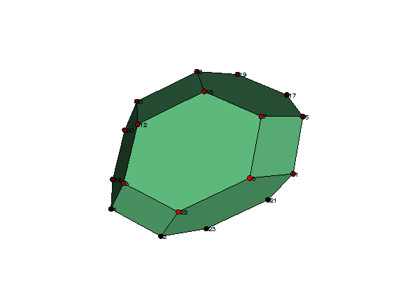
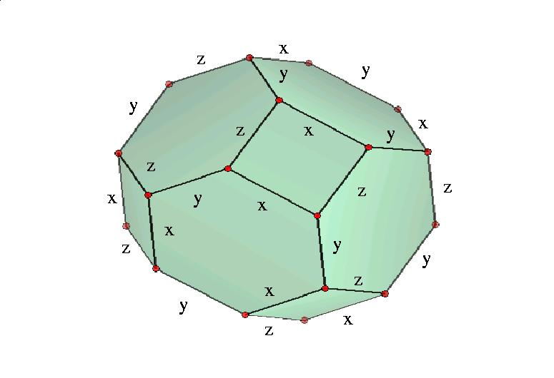
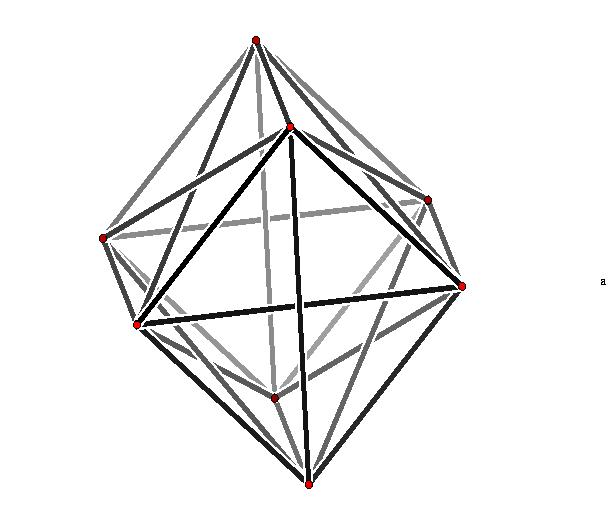

|
|||
|---|---|---|---|
| Suppose
that G is a permutation group of degree n or a finite group of
n×n orthogonal real matrices. In both cases we can try to use the
action of G on euclidean n-space Rn to
obtain information about the cohomology of G. We do this by choosing a
vector v in Rn
which is fixed by no non-trivial element in G. Such a vector always
exists. Then form the convex hull of the vectors in the orbit of v
under the action of G. This hull is a convex polytope which we denote
by P(G,v). Its combinatorial
structure can be accessed using the Polymake
computational geometry software package (see [S.Kelly, "Orbit polytopes
for finite groups", NUI Galway PhD thesis, in preparation]). Consider for example the symmetric group S4 acting on R4 by permuting basis vectors. For any vector v in R4 with distinct coordinates the polytope P(S4,v) is the Permutahedron. It can be vizualized using the following commands (which call Polymake functions). |
|||
| gap>
OrbitPolytope(SymmetricGroup(4),[1,2,3,4],["visual"]); 
|
|||
| The
linearity of the action implies that G permutes the k-faces of P(G,v)
in each dimension k. The action of G on the vertices (0-faces) can be
recorded by labelling edges with elements of G. The set of edge labels
corresponds to a generating set for the group G. For G=S4
the labelling is as follows.

(Pictures for other 3-dimensional
euclidean isometry groups are given here.)
The following commands show that the edge labels for P(S4,v) are the permutations x=(1,2), y=(2,3), z=(3,4). |
|||
| gap>
G:=SymmetricGroup(4);;v:=[1,2,3,4];; gap> P:=PolytopalGenerators(G,v);; gap> P.generators; [ (3,4), (2,3), (1,2) ] |
|||
| The
following commands show that there are precisely three orbits of
1-faces (edges) and also three orbits of 2-faces in the polytope P(S4,v). |
|||
| gap>
G:=SymmetricGroup(4);;v:=[1,2,3,4];; gap> P:=PolytopalComplex(G,v);; gap> P!.dimension(1); 3 gap> P!.dimension(2); 3 |
|||
| The following additional commands for P(S4,v) show that the stabilizer subgroups for the 2-cells in each of the three orbits are the three groups C2×C2=<x,z>, S3=<x,y> and S3=<y,z>. | |||
| gap>
P!.stabilizer(2,1); Group([ (1,2), (1,2)(3,4) ]) gap> P!.stabilizer(2,2); Group([ (1,3,2), (1,3) ]) gap> P!.stabilizer(2,3); Group([ (2,4,3), (2,4) ]) |
|||
| The
cellular chain complex C*(P(G,v)) is a complex of ZG-modules
which, thanks to the contractibility of the polytope, has trivial
homology in all but its top and bottom dimensions; its homology groups
are infinite cyclic in both the top and bottom dimensions. Thus
infinitely many copies of C*(P(G,v)) can be spliced together
to form an infinite periodic ZG-resolution P* of Z. In general P* is not a free ZG-resolution. But sometimes it is free, and the homology of G is then periodic with period equal to the dimension of (P(G,v)). The resolution P* is free if all faces of the polytope (except the single top dimensional face) have trivial stabilizer group. For example, the usual 2-dimensional complex representation of the group Q of quaternions can be regarded as a 4-dimensional real representation. The group Q has order eight, and the 1-skeleton of the 4-dimensional polytope P(Q,v) can be pictured using the following commands. |
|||
| gap>
A:=[[0,-1,0,0,],[1,0,0,0,],[0,0,0,1],[0,0,-1,0]];; gap> B:=[[0,0,-1,0],[0,0,0,-1],[1,0,0,0],[0,1,0,0]];; gap> Q:=Group([A,B]);; gap> OrbitPolytope(Q,[1,0,0,0],["visual_graph"]); 
|
|||
| The following additional commands show that the polytope P(Q,v) yields a free ZQ-resolution of period 4. | |||
| gap>
P:=PolytopalComplex(Q,[1,0,0,0]);; gap> for k in [1..3] do > for n in [1..P!.dimension(k)] do > Print(Order(P!.stabilizer(k,n)),"\n"); > od;od; 1 1 1 1 1 1 1 1 1 |
|||
| The
following additional commands show that the quaternion group has third
integral homology H3(Q,Z)=Z8 |
|||
| gap>
TP:=TensorWithIntegers(P);; gap> Homology(TP,3); [ 8 ] |
|||
| The
following additional command yields the satisfying group presentation Q = < i, j, k : ij=k, jk=i,
ki=j, ikj=1>
for the quaternion group Q.
|
|||
| gap>
PresentationOfResolution(P); rec( freeGroup := <free group on the generators [ f1, f2, f3 ]>, relators := [ f2*f3^-1*f1^-1, f3*f2*f1^-1, f1*f2*f3, f1*f3^-1*f2 ] ) |
|||
| This
method of obtaining a presentation for the group G from the
combinatorial structure of the polytope P(G,v) will work whenever
the vertices and edges of the polytope have trivial stabilizer in
G. For example, the following commands produce a nice presentation for the permutation group G of order 6561 arising as the Sylow 3-subgroup of the alternating group A18 . |
|||
| gap>
G:=SylowSubgroup(AlternatingGroup(18),3);; gap> P:=PolytopalComplex(G,[1,2,3,4,5,6,7,8,9,10,11,12,13,14,15,16,17,18],2); gap> PresentationOfResolution(P); rec( freeGroup := <free group on the generators [ f1, f2, f3, f4, f5, f6, f7, f8 ]>, relators := [ f1^3, f2*f1*f2^-1*f1^-1, f3*f1*f3^-1*f1^-1, f4*f3*f4^-1*f1^-1, f1*f4^-1*f2^-1*f4, f5*f1*f5^-1*f1^-1, f6*f1*f6^-1*f1^-1, f7*f1*f7^-1*f1^-1, f8*f1*f8^-1*f1^-1, f2^3, f3*f2*f3^-1*f2^-1, f2*f4^-1*f3^-1*f4, f5*f2*f5^-1*f2^-1, f6*f2*f6^-1*f2^-1, f7*f2*f7^-1*f2^-1, f8*f2*f8^-1*f2^-1, f3^3, f5*f3*f5^-1*f3^-1, f6*f3*f6^-1*f3^-1, f7*f3*f7^-1*f3^-1, f8*f3*f8^-1*f3^-1, f4^3, f5*f4*f5^-1*f4^-1, f6*f4*f6^-1*f4^-1, f7*f4*f7^-1*f4^-1, f8*f4*f8^-1*f4^-1, f5^3, f6*f5*f6^-1*f5^-1, f7*f5*f7^-1*f5^-1, f8*f7*f8^-1*f5^-1, f5*f8^-1*f6^-1*f8, f6^3, f7*f6*f7^-1*f6^-1, f6*f8^-1*f7^-1*f8, f7^3, f8^3 ] ) |
|||
| Suppose
that the vertices of the polytope P(G,v) have trivial stabilizer group,
but that an edge with generator label x has non-trivial stabilizer
group. Then the relation x2=1 would have to be added to a
presentation for G obtained by the above method. The function PresentationOfResolution(P) does not work if the resolution P is not free in dimension 1. However, the following commands show for example that the alternating group A8 admits a presentation with six generators and 21 relators. The relators are of lengths 2,3,4,5,6,8 and their total length is 89. |
|||
| gap>
P:=PolytopalComplex(AlternatingGroup(8),[1,2,3,4,5,6,7,7],2);; gap> NumberOfGens:=P!.dimension(1); 6 gap> OrdersOfGens:=List([1..NumberOfGens],x->Order(P!.stabilizer(1,x))); [ 1, 2, 2, 2, 2, 2 ] gap> NumberOfRels:=5+P!.dimension(2); 21 gap> SizesOfRels:=Concatenation([2,2,2,2,2], List([1..NumberOfRels-5],x->Length(P!.boundary(2,x)))); [ 2, 2, 2, 2, 2, 3, 8, 5, 5, 5, 5, 6, 4, 4, 4, 6, 4, 4, 6, 4, 6 ] gap> Sum(SizesOfRels); 89 |
|||
| When
the k-faces e in P(G,v) have non-trivial stabilizer groups Ge
then the non-free ZG-resolution C*(P(G,v)) can be combined
with free ZGe-resolutions to produce a smallish (i.e.
polynomial growth) free ZG-resolution. The details are explained in [G.
Ellis, J. Harris & E. Sköldberg, "Polytopal resolutions for
finite groups", J. Reine Angewandte Math., to appear] but have not yet
been implemented in HAP. A slightly weaker result states that there is
a spectral sequence E1pq =
Hq(Ge[1],Z) + ... + Hq(Ge[t],Z)
=>
Hp+q(G,Z)
in which the E1 term involves the q-th homology of the stabilizer groups Ge[i] where the e[i] are p-cells representing the orbits of p-cells under the action of G. |
|||
|